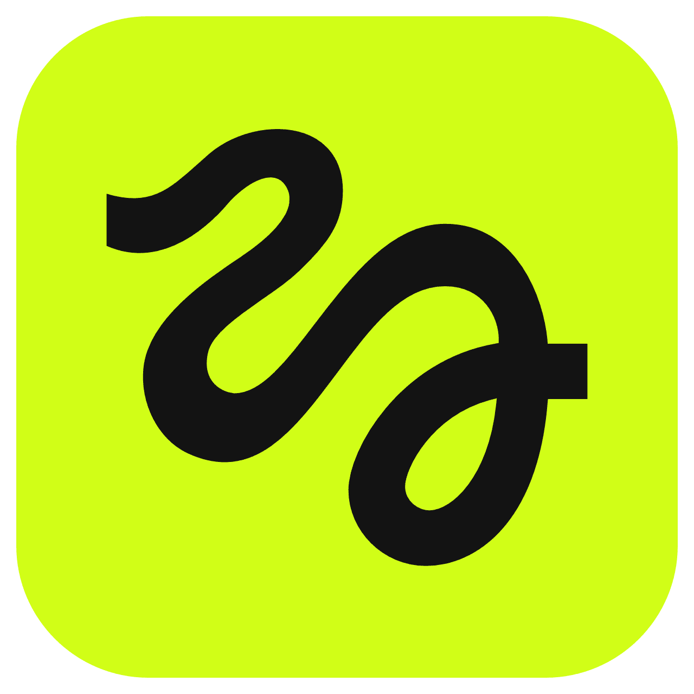
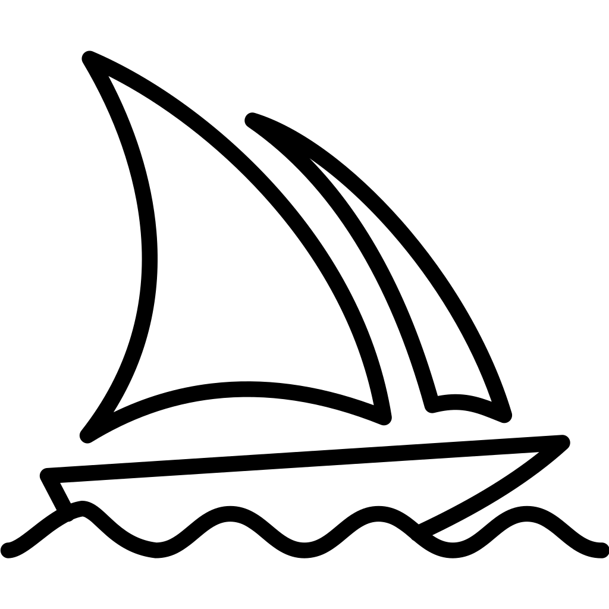
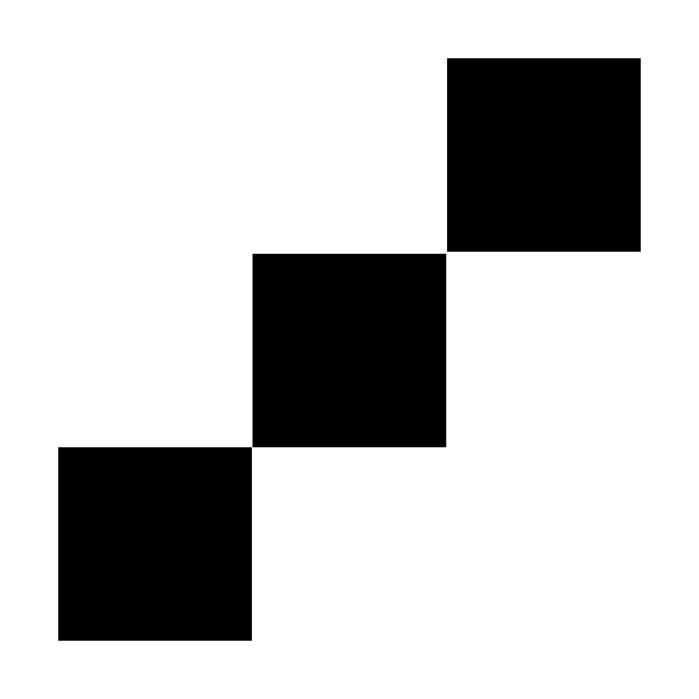
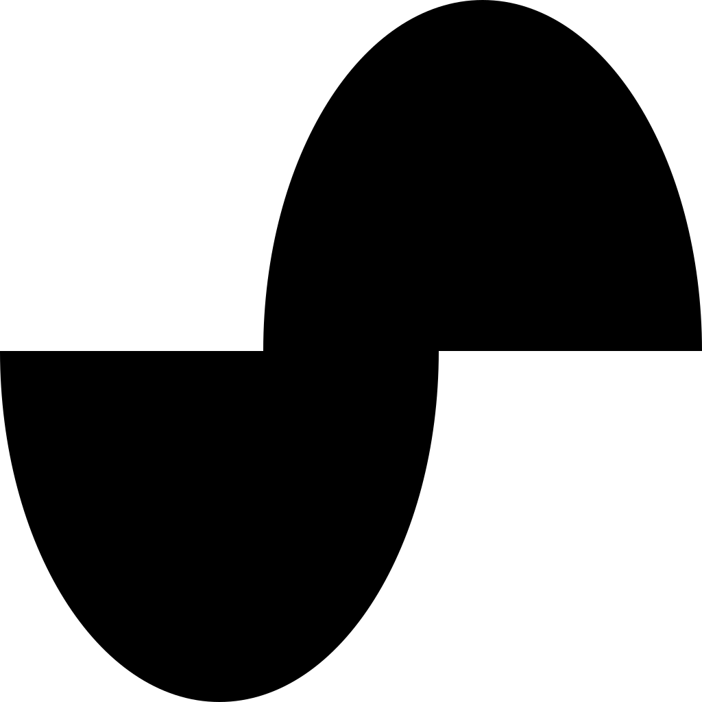

Eray Balat
I make films, and I build the systems that make more of them. knowing where a model breaks is most of the work — knowing when the output is still wrong is the rest.
who I am
I'm twenty, from Kayseri, studying Radio, Television and Cinema at Erciyes. I write, cut, grade and score films. I cut Boomerang — edit only, no writing or directing credit — and it took an Honorable Mention from Robert F. Kennedy Human Rights. I compose my own scores, over 5,500 tracks so far. away from the screen I hand-tool leather in Anatolian and Seljuk motifs, which is the one thing I make that no model can generate.
my own shorts live on my channel. Die Post was the first — a story about a Turkish–German friendship, shot in Turkish and subtitled in German, which I wrote, directed and produced. I also wrote, directed and acted in Run or Run. three student films went out across twenty festival entries.
in 2025 I won a DiscoverEU rail pass and crossed Europe alone, then came back as an ambassador for the programme — my story ran on the official European Youth channel. in 2026 I worked out of Canggu and Da Nang as a nomad, delivering to US and EU clients across eight time zones. I came home, registered my own studio, and kept the clients.
somewhere in there I stopped being someone who uses generative tools and became someone who builds the machinery around them. that happened because production kept breaking in the same places — consistency, throughput, and the last ten percent that makes a shot look filmed instead of generated.
the half of me that paints decides whether a frame is any good. the half that builds decides whether we can make a thousand of them.
that's why fal reads to me less like a job posting and more like the place the two halves stop arguing.
what I've already built on this stack
- DreamScene
- one sentence in, one film out. built live at the Generative Media Hackathon in Istanbul. an LLM orchestration layer expands a single line into a ~200-word multi-shot cinematic prompt — camera, lighting, audio design — then routes to a video model for a 1080p render with synced audio in two minutes. multi-model routing across Seedance, Kling and Runway, live render queue, working front-end — built in 24 hours. a prototype, but the idea holds and I want to take it further.
- finishing
- an anti "AI-tell" chain — upscale, restore, regrade, grain. the difference between output a label accepts and output that comes back.
- at scale
- 75+ assets across an 8-model furniture series. a full campaign in 72 hours: three films, six product films, two identity-locked characters, original score. identity holds across the whole set.
- shipped
- two AI music videos for Universal Music Türkiye, one produced entirely inside a single model family under client restriction. knowing what a model cannot do is most of the job.
- models
- Veo · Kling · Runway · Seedance · Higgsfield · Nano Banana · Firefly · Midjourney · Topaz · Magnific · ElevenLabs · Suno · HeyGen · Hedra · Sync — in paid production, not in demos.
tools i actually open every day








what we could build together
flagship work that doesn't look generated
most showcase reels betray the model in the first two seconds. I'd produce fal's flagship films to a broadcast bar — real edit, real grade, real sound design, real score — so the platform is judged on its ceiling instead of its default output.
model evaluation from the director's chair
same brief, same shot, every video model — scored on prompt adherence, motion coherence, identity hold, and where each one falls apart. benchmarks written by someone who has to deliver the shot, not by someone reading a spec sheet. useful internally; even more useful published.
reference pipelines people can steal
DreamScene as a pattern, not a one-off: open, documented recipes that chain prompt expansion, model routing, queueing and finishing. the gap between "I ran a model" and "I shipped a film" is where most users give up — that's the gap to close.
the finishing layer nobody ships
generation is solved enough. post is not. a documented, repeatable finishing pass — upscale, restore, grade, grain, anti-tell — turned into something a user can call instead of learning Resolve for six months.
localisation and the market I'm standing in
multilingual voice-over and lip-sync at scale — one film reaching several language markets. and Türkiye and MENA as a creator community: I'm already in the Istanbul generative-media scene, at the hackathons, in the group chats.
and the thing I actually want to make
next year I'm going after a feature. how much of it is AI-driven and how much is fully generated is exactly the question I want to answer by making it — nobody has settled where the line sits at feature length. that is the problem I'd rather solve inside a company building the tools than alone on the outside.